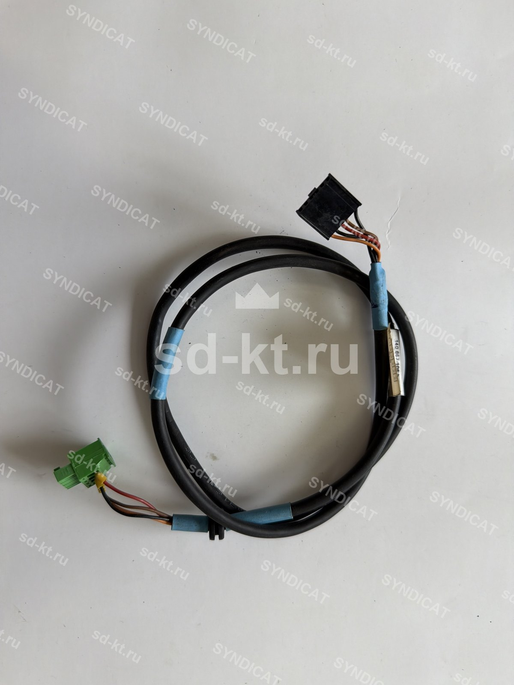

Кабель генератора импульсов Gilbarco (арт. 140867106)
Артикул: 1300
5 051 ₽
Gilbarco
Раздел: Электроника для АЗС · АЗС
Наличие и сроки — по запросу. Поставляем оригинал и аналоги. Доставка по России.
Описание
Кабель генератора импульсов Gilbarco (арт. 140867106) производства Gilbarco — позиция из раздела «Электроника для АЗС» для АЗС. Компания SYNDICAT поставляет оборудование и комплектующие для автозаправочных и газозаправочных станций по всей России. Цена и наличие «Кабель генератора импульсов Gilbarco (арт. 140867106)» — по запросу: оставьте заявку или позвоните, подберём оригинал или аналог и рассчитаем доставку.